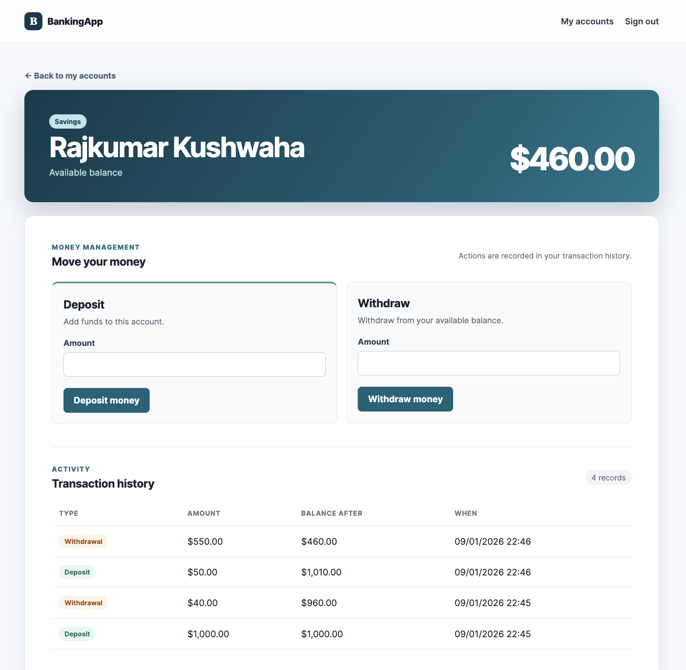
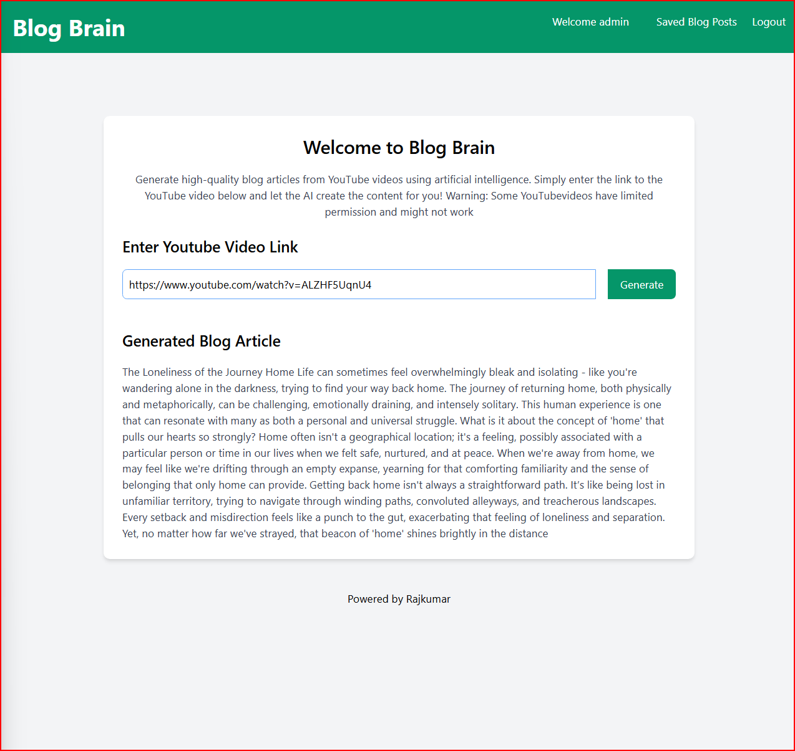

40%
Lowered average GPU inference queue wait times with distributed worker orchestration.
Springfield, MO · Open to SWE opportunities
Software Engineer | AI/Backend | Distributed Systems
I build production-ready systems across AI, backend, and infrastructure. My recent work includes reducing queue wait times by 40%, cutting p99 database latency from 900ms to 180ms, and shipping secure APIs with 90%+ test coverage.
Lowered average GPU inference queue wait times with distributed worker orchestration.
Reduced p99 PostgreSQL retrieval latency from 900ms to 180ms on 10M+ row datasets.
Eliminated manual preprocessing effort by automating PDF/whitepaper ETL ingestion.
Achieved unit/integration coverage on enterprise backend services and auth flows.
Startup Networking Platform
Challenge: Create an end-to-end product for entrepreneur collaboration and monetization.
Built: Full SDLC from concept to release, financial integrations (Stripe + Apple IAP), and secure backend with MFA + Row-Level Security.
Result: 13+ production iterations driven by real user feedback and engagement metrics.
Flutter · PostgreSQL · Docker · Supabase · Firebase · Python
If the preview does not load because of browser embedding policies, open the live site in a new tab.
LLM Fine-Tuning + Full-Stack Delivery
Challenge: Deliver domain-accurate LLM responses without expensive enterprise GPUs.
Built: LoRA-tuned Llama 3.1-8B pipeline, automated dataset engineering for 8,000+ documents, and production Flask API + Flutter client.
Result: 85% reduction in irrelevant outputs and launch readiness for 200+ concurrent users.
Python · PyTorch · LoRA · Flask · Flutter · Hugging Face · PostgreSQL

Enterprise-Grade .NET Backend
Challenge: Build production IAM and API reliability patterns from the ground up.
Built: ASP.NET Core Identity with RBAC/JWT/refresh tokens, async Minimal APIs, structured logging, and automated Azure CI/CD.
Result: 90%+ test coverage with zero manual deployment steps in release flow.
C# · ASP.NET Core (.NET 10) · EF Core · MSSQL · Docker · Azure · xUnit

Distributed Queue + Data Platform Optimization
Challenge: Improve throughput and data-access performance under growing job load.
Built: Queue routing infrastructure, ETL automation, and database tuning workflows across critical production paths.
Result: Faster inference scheduling, 70%+ process automation, and 5x retrieval speed improvement.
Python · PHP · PostgreSQL · Linux · Distributed Systems

Meeting Intelligence + Action Extraction
Challenge: Long meetings produced important decisions and follow-ups, but manual note review and replaying recordings was slow and error-prone.
Built: A pipeline direction for processing recordings into speaker-attributed transcripts and structured outputs such as decisions, action items, owners, and due dates.
Progress: Project scaffolding is complete, and integrated testing of audio preprocessing + Whisper transcription is working end-to-end.
Validation Findings: Audio is consistently normalized (16kHz mono) before transcription, larger Whisper models improved contextual accuracy, and smaller models sometimes performed better for speaker attribution.
Research Insight: Early tests show transcription quality drops on thicker accents (for example Filipino and African accents), highlighting accent-robustness as a core improvement area.
Team: Group project with collaborator Rikesh Sapkota (@rikesh28).
Python · Whisper · Audio Processing · NLP · Evaluation Pipelines

AI-Assisted Content Ideation Platform
Challenge: Brainstorming high-quality blog ideas and structures repeatedly can be slow and inconsistent.
Built: A project-focused workflow to generate content ideas, organize topics, and accelerate early drafting with AI assistance.
Result: Improved speed from idea to draft-ready outline while keeping output aligned to target themes.
Python · AI Workflows · Content Automation
C#, Python, JavaScript, TypeScript, SQL, HTML/CSS, Kotlin
ASP.NET Core, EF Core, Flask, Django, React, PyTorch, Hugging Face Transformers
PostgreSQL, MSSQL, index strategy, schema design, query optimization
Docker, Azure, GitHub Actions, Linux CLI, distributed systems
REST APIs, RBAC/JWT auth, ETL pipelines, LLM fine-tuning, production observability
Let’s discuss software engineering opportunities, backend systems, and AI product work.